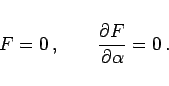

Inhalt Index DeskTop Bronstein

 Geometrie Differentialgeometrie Ebene Kurven Einhüllende von Kurvenscharen
Geometrie Differentialgeometrie Ebene Kurven Einhüllende von Kurvenscharen


Die Gleichung der Einhüllenden wird aus (3.486) berechnet, indem  aus dem folgenden Gleichungssystem eliminiert wird:
aus dem folgenden Gleichungssystem eliminiert wird:
|  | (3.487) |
| Beispiel |
|
Es ist die Gleichung der Geradenschar zu bestimmen, die dadurch entsteht, daß die Enden einer Strecke AB = l entlang der Koordinatenachsen gleiten.
Die Gleichung der Kurvenschar lautet: |